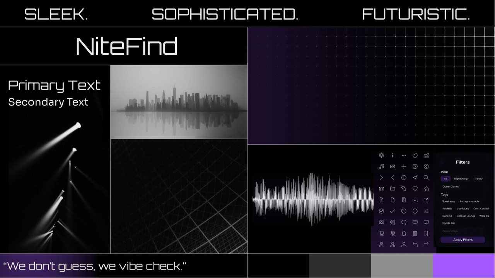
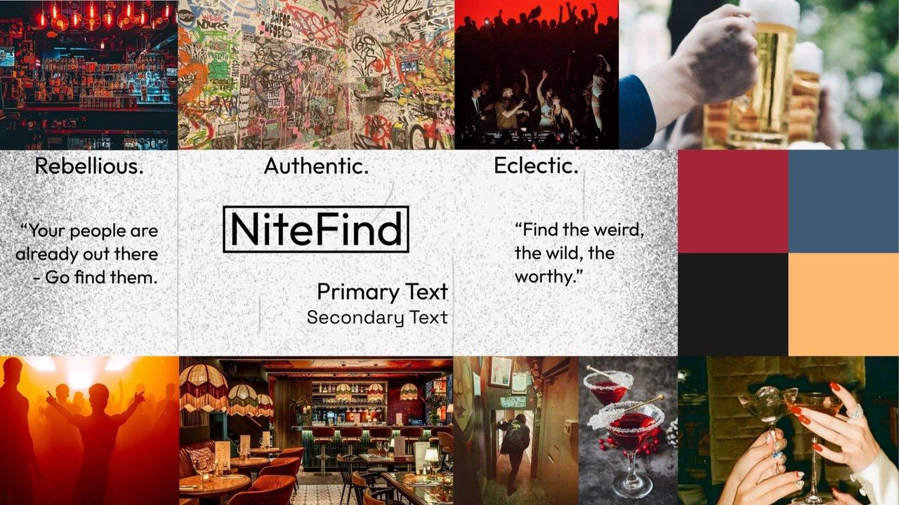
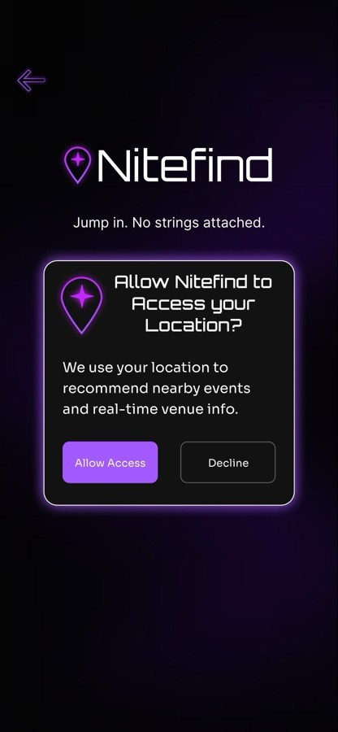
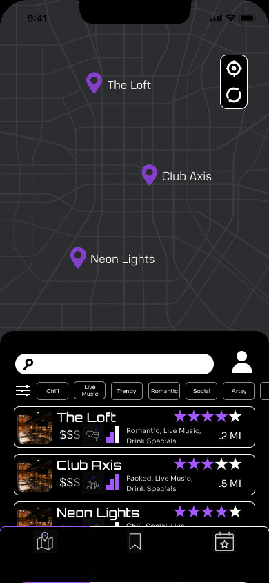
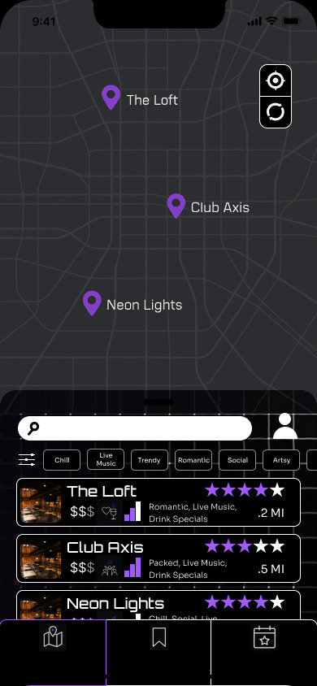

Midnight Grid over Alt Scene
Alt Scene had more personality. Midnight Grid made the product easier to understand. I chose clarity.
Alt Scene: bold, eclectic, built to celebrate nightlife subculture. Midnight Grid: minimal, built for clarity.
The deciding factor wasn't taste.
A louder system asks people to process more before they can act. The whole product exists to reduce the number of decisions between wanting to go out and being somewhere good.
The direction that looked better in isolation worked against the thing it needed to do.


Real usability testing changed real decisions
Testing surfaced four concrete issues. Each one led to an actual design change, not just a note.
- People hesitated to share location with no context
- added a plain-language explanation and a skip option
- The "Quick Pick" filter felt like a black box
- added visible "based on: [filters]" transparency
- No confirmation when bookmarking
- added a save confirmation and a dedicated saved tab
- Advanced filters felt too generic
- expanded toward more specific, niche filter options

A small test, treated with appropriately small confidence
A faint grid texture got tested behind the nav against plain black, on a small user pool. Plain black won clearly.
That matched the hypothesis: texture would add visual noise without benefit.
Small test, one variable, straightforward result. Not overselling it as a bigger finding than it was.


What I'd do differently now
Orbitron, the display typeface, reads closer to gaming and sci-fi than the calm, low-friction feeling the rest of the product argues for. That's a real tension between the typeface's personality and the app's actual thesis, and I'd resolve it differently today.
Peer feedback also flagged information density on small screens as tight.